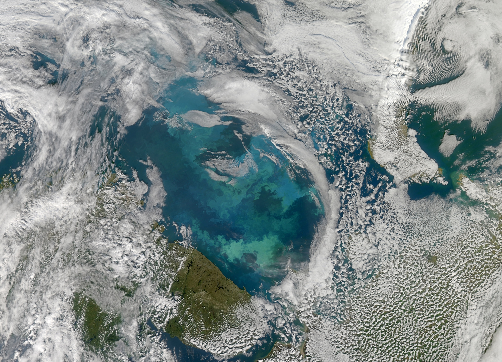
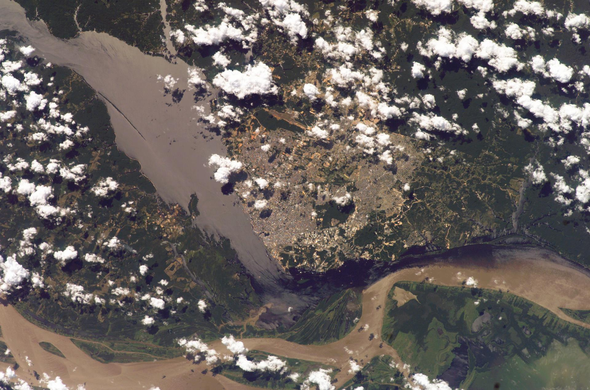
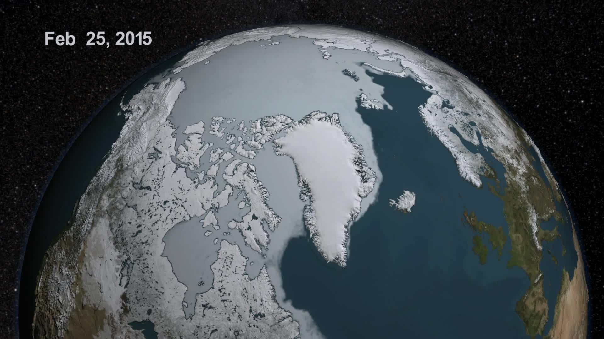
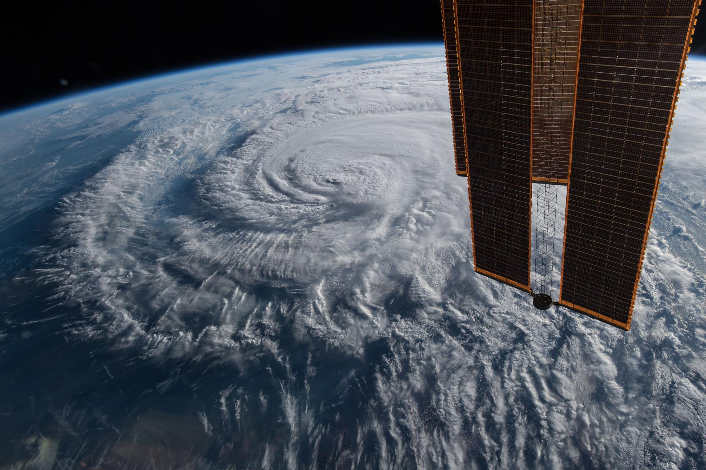
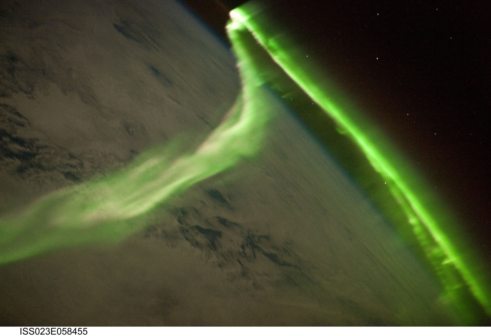
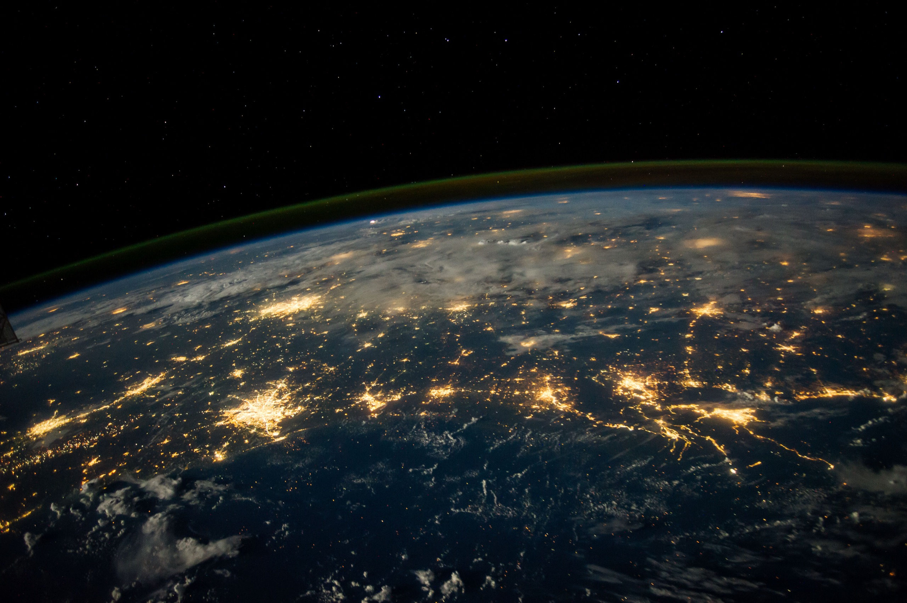
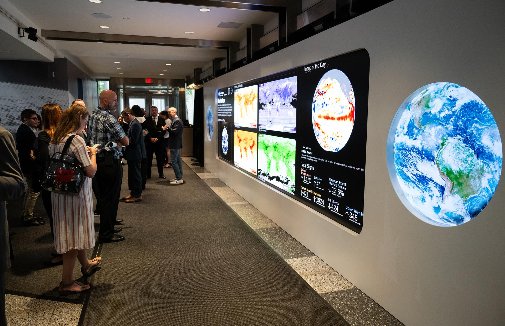
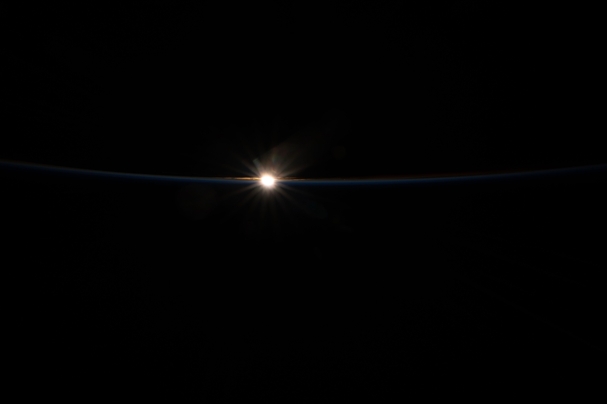

For nearly fifty years, SSAI has turned what we see from space into knowledge that improves life on Earth.
Every day, from orbit, we measure the one planet we all depend on — its oceans, its air, its ice, its light.
Ocean colour reveals the phytoplankton that produce half the oxygen we breathe — read in a dozen wavelengths of light.
We track the carbon the forests hold and the health of every growing season from space.
Sea ice, glaciers, and the poles — measured year over year, so the world can see what's happening.
From the eye of a hurricane to the dust that crosses an ocean — observed, modelled, and forecast.
The aurora is the visible edge of a system SSAI helps NASA and NOAA watch around the clock.
Calibration, models, data assimilation, AI — the understanding layer that turns raw light into science you can trust.
Inside the lab, the planet becomes knowledge — the same imagery you just fell through, turned into decisions humanity can trust.